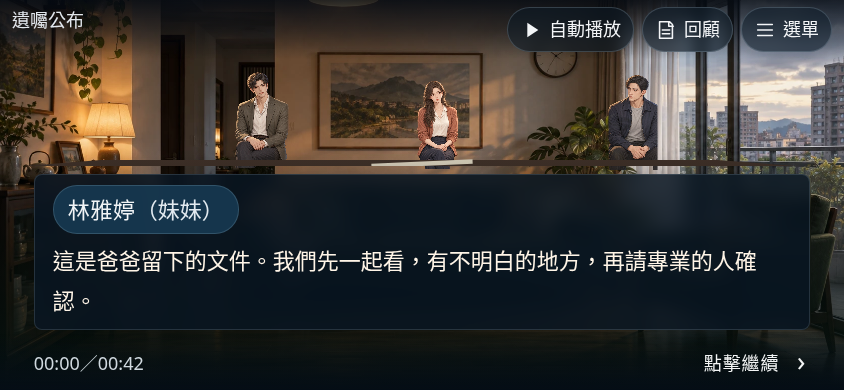
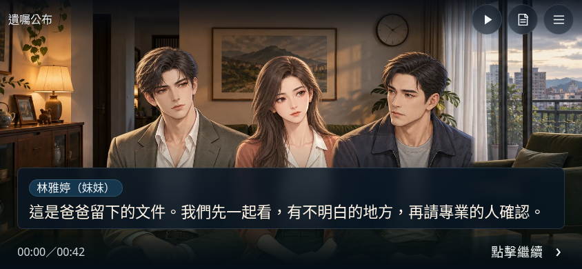
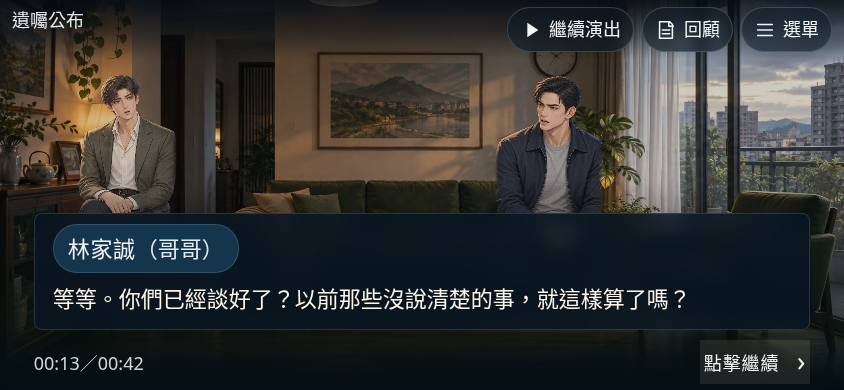
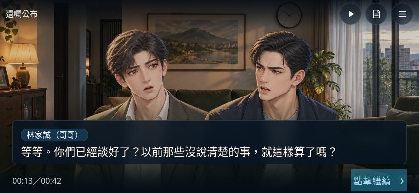
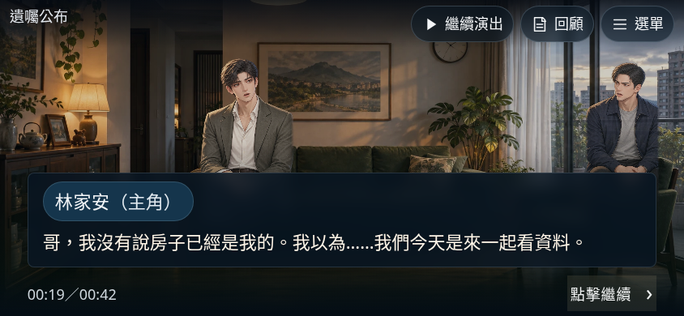
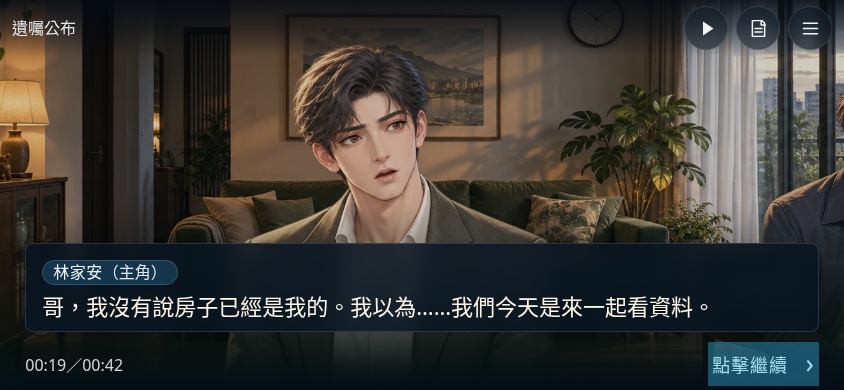
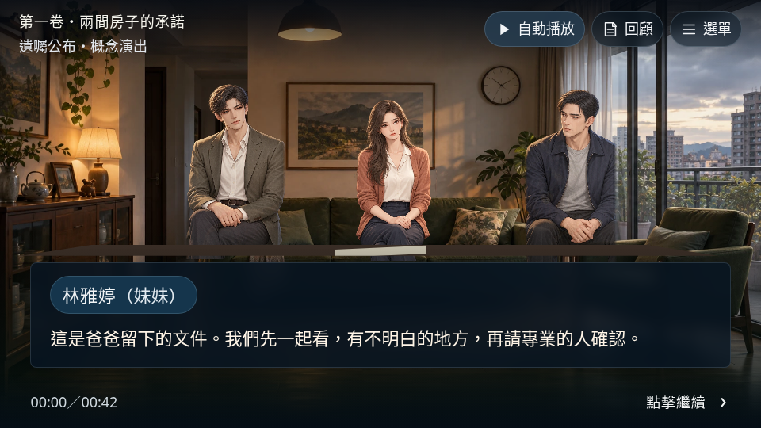
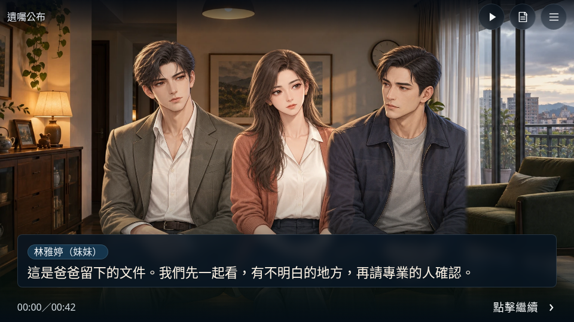

只修正同一場景的橫向構圖與介面比例；人物素材、故事與存檔不變。以下是同台詞、同尺寸、100%字級的實際瀏覽器擷取，不是概念設計稿，也不冒充實體手機拍照。








| 視窗 | 臉部框高度 | 字幕高度 | 一般內文 |
|---|---|---|---|
| 844×390 | 20→90px | 156→89px | 22px |
| 960×540 | 46→102px | 133→89px | 22px |
| 1280×720 | 82→136px | 133→89px | 22px |
縮減的是字幕留白、姓名標籤與頂部操作列。三種字級保留；臉部大小與間距依鏡頭個別計算，並非整個Canvas等比例放大。
55項單元／回歸、15組手機專項／105個鏡頭檢查，加上原27組與189次旋轉回歸通過。實體手機仍待再次確認。